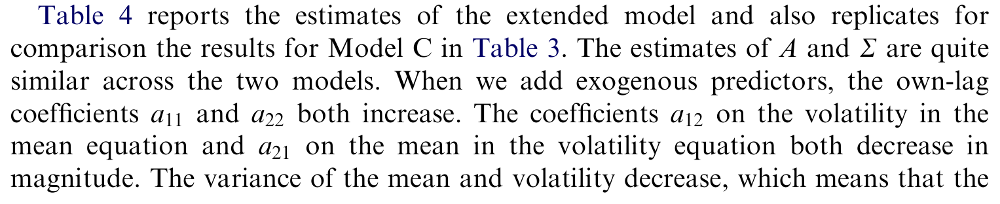
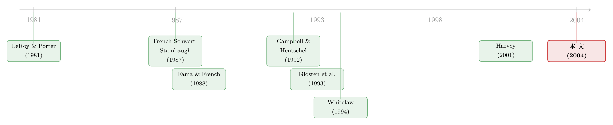

收益与风险，到底是「正相关」还是「负相关」？——一道纠缠了二十年的符号谜题
本文读的是 Brandt & Kang (2004, Journal of Financial Economics)：作者把股票收益的条件均值与条件波动率当成一对谁也观测不到的潜变量，用一个潜在向量自回归 (latent VAR) 把它们的「同期」与「跨期」关系一次性估出来。结论很反直觉——同期来看，均值与波动率的创新是负相关的（高波动当下压低了预期收益，夏普比率因此呈现强烈的逆周期），但无条件来看，二者却是正相关的。这两个看似矛盾的符号，恰恰能解释文献里吵了二十年也没吵明白的那桩公案。
1 引言：一个「本该简单」却怎么也说不清的关系
金融学里有些问题，听上去简单到不像是问题。比如这一个：承担更多风险，是不是就该拿到更高的预期收益？
几乎所有资产定价模型都会点头。无论是横截面上的「高风险高溢价」，还是时间序列上的「波动大的时候预期收益也该高」，这都是教科书第一章就写下的信念。可一旦你真的拿数据去量它，事情就开始失控了。
横截面上，Fama and French (1996) 已经告诉我们，单靠风险差异解释不了股票预期收益的横截面差别（关于这一点，可参见《会「看天」的 beta：当风险收编了价值与规模，动量却躲进了商业周期》）。而时间序列上的情况更糟——同一个问题，不同的人用不同的模型，量出来的符号居然是反的。
这就是本文要解决的张力所在。让我先把这桩公案的「案情」摆出来。
2 一桩二十年的符号公案
先把舞台搭好。所谓「条件均值-波动率关系」，问的是：在某个时点上，预期收益 \(\mu_t\) 和它的波动率 \(\sigma_t\) 是怎么一起变动的？
用所谓波动率入均值 (volatility-in-mean) 模型——本质上是让方差同期地进入均值方程的 ARCH 模型——French et al. (1987) 和 Campbell and Hentschel (1992) 量出了正相关。听上去很合理：风险大，所以要补偿。
可偏偏，Campbell (1987)、Breen et al. (1989)、Nelson (1991) 和 Glosten et al. (1993) 用相似的框架，量出来的却是负相关。Koopman and Uspensky (1999) 更绝——他们用随机波动率入均值 (SV-in-mean) 模型得到弱负相关，换成 ARCH 的波动率入均值模型却得到弱正相关。到了 Harvey (2001)，干脆把话挑明了：相关性的符号，取决于你用了什么模型、塞了哪些外生预测变量。
接着，一个自然的问题是：问题到底出在哪里？
本文的答案，藏在一个被前人忽略的细节里——几乎所有这些研究，都依赖外生预测变量（股利率、短期利率、期限溢价、违约溢价……）来「代理」那个看不见的条件均值和条件波动率。而预测回归这条路本身，正越来越被人怀疑：从 Stambaugh (1999) 的小样本偏误，到 Bossaerts and Hillion (1999)、Goyal and Welch (2002) 的样本外失灵，这套外生预测变量的体系并不牢靠（关于贴现率/预期收益时变这一更大的母题，可参见《贴现率：资产定价的中心议题》）。
更微妙的是 Whitelaw (1994) 的做法：他先用一组预测回归拟合出均值和波动率，再把这两条拟合序列塞进一个 VAR。问题在于——拟合矩的动态，是由第一阶段预测变量的联合分布决定的。只要第一阶段稍有设定误差（比如漏了一个变量），拟合矩的动态就不再等于真实矩的动态；更何况第一阶段回归引入的「变量误差」(errors-in-variables) 在 VAR 里几乎无法量化。
于是本文的核心一招出现了：索性别用任何外生预测变量。把条件均值和条件波动率当成两个纯粹的潜变量，让数据自己说话。
3 模型：把两个看不见的矩，写成一个潜在 VAR
这是全文的发动机，值得一步步拆开。
第一步：收益的数据生成过程。 设 \(y_t\) 为连续复利的超额收益，它由一个时变的条件均值和条件波动率驱动：
$$ y_t = \mu_{t-1} + \sigma_{t-1}\,\varepsilon_t, \qquad \varepsilon_t \sim N[0,1]. $$
注意，\(\mu_{t-1}\) 和 \(\sigma_{t-1}\) 都带着 \(t-1\) 的下标——它们是在 \(t-1\) 时点就已确定、却无法被观测的量。这一点是后面一切麻烦（和精彩）的根源。
第二步：让两个矩联合演化。 作者假设条件均值和条件波动率的对数，服从一个一阶 VAR：
为什么取对数？因为这样建模能保证 \(\mu_t>0\)（对市场组合来说，正的风险溢价是合理的，这一处理 Bekaert and Harvey (1995)、De Santis and Gerard (1997) 都用过），同时让 \(\sigma_t\) 服从对数正态——这与 Andersen et al. (2001) 关于已实现波动率近似对数正态的发现一致。
第三步：把关键参数点出来。 写开来，转移矩阵和协方差矩阵分别是
$$ A = \begin{bmatrix} a_{11} & a_{12} \\ a_{21} & a_{22}\end{bmatrix}, \qquad \Sigma = \begin{bmatrix} b_{11} & b_{12} \\ b_{21} & b_{22}\end{bmatrix}, \quad b_{12}=b_{21}=\rho\sqrt{b_{11}b_{22}}. $$
这里 \(\rho\) 就是同期相关系数——条件均值创新 \(Z_{1t}\) 与条件波动率创新 \(Z_{2t}\) 之间的相关性。整篇论文的核心悬念，就压在这一个希腊字母身上。
第四步：看清这个模型「吞下」了什么。 拆开来看两个方程：
$$ \ln\mu_t = d_1 + a_{11}\ln\mu_{t-1} + a_{12}\ln\sigma_{t-1} + Z_{1t}, $$ $$ \ln\sigma_t = d_2 + a_{21}\ln\mu_{t-1} + a_{22}\ln\sigma_{t-1} + Z_{2t}. $$
第一条方程，正是 Fama and French (1988) 「永久-暂时成分」模型里那个暂时（均值回复）成分；若令 \(a_{12}=0\)，它就退化成 Lamoureux and Zhou (1996) 的设定。第二条方程，在 \(a_{21}=0\) 时就是 Wiggins (1987)、Jacquier et al. (1994)、Kim et al. (1998) 研究过的标准随机波动率 (SV) 模型。换句话说，这个潜在 VAR 同时把「时变预期收益」和「随机波动率」这两条独立发展了二十年的文献，焊接成了一个框架。
第五步——也是最漂亮的一步：把它还原成「波动率入均值」模型。 作者把 \(Z_{1t}\) 投影到 \(Z_{2t}\) 上，令 \(Z_{1t}=b_1 Z_{2t}+\xi_{1t}\)，其中
$$ b_1 = \frac{\text{Cov}[Z_{1t},Z_{2t}]}{\text{Var}[Z_{2t}]} = \rho\sqrt{\frac{b_{11}}{b_{22}}}, $$
再把 \(Z_{2t}\) 用波动率方程反解出来代回均值方程，得到一个简化式：
$$ \ln\mu_t = (d_1-b_1 d_2) + (a_{11}-b_1 a_{21})\ln\mu_{t-1} + (a_{12}-b_1 a_{22})\ln\sigma_{t-1} + b_1\ln\sigma_t + \xi_{1t}. $$
看最后几项：\(b_1\ln\sigma_t\) 是同期波动率对均值的影响——这正是经典的波动率入均值效应，而它的符号由投影系数 \(b_1\)、进而由 \(\rho\) 决定。而 \((a_{12}-b_1 a_{22})\ln\sigma_{t-1}\) 这一项，是滞后波动率对均值的影响，作者称之为滞后波动率入均值 (lag-volatility-in-mean) 效应。
这就是本文超越旧模型的两处关键。其一，只要 \(|\rho|\neq 1\)，条件均值就有两个随机性来源（\(Z_{2t}\) 和正交的 \(\xi_{1t}\)），打破了旧版波动率入均值模型强加的「均值与波动率一一对应」的过强约束。其二，旧模型只有同期效应，而这里滞后波动率也进了均值方程——对称地，滞后均值也会进波动率方程（lag-mean-in-volatility）。Whitelaw (1994) 早就说这种领先-滞后互动是数据的显著特征，Lettau and Ludvigson (2001) 用另一组预测变量也佐证了它。
至此，整个模型的精髓可以一句话概括：同期相关 \(\rho\) 管「当下」，转移矩阵 \(A\) 的非对角元管「先后」——而真正的故事，恰恰发生在这两者打架的地方。
4 夏普比率：藏在两个矩之差里的逆周期
模型搭好后，一个自然的推论是：既然均值和波动率都时变，它们的比值——夏普比率 (Sharpe ratio)——会怎么动？
定义对数夏普比率 \(\ln S_t = \ln\mu_t - \ln\sigma_t = T'[\ln\mu_t,\ln\sigma_t]'\)，其中 \(T=[1,-1]'\)。代入 VAR 可得
$$ \ln S_t = (d_1-d_2) + (a_{11}-a_{21})\ln\mu_{t-1} + (a_{12}-a_{22})\ln\sigma_{t-1} + (Z_{1t}-Z_{2t}). $$
这个式子告诉我们两件事。第一，夏普比率的波动，由两个矩的均值回复、外加创新之差 \(Z_{1t}-Z_{2t}\) 驱动。第二——也是个有趣的细节——即便 \(|\rho|=1\)（两个创新完全相关），只要 \(b_{11}\neq b_{22}\)（它们的幅度不同），夏普比率依然是随机的。唯有 \(|\rho|=1\) 且 \(b_{11}=b_{22}\) 时它才非随机，而即使那样，它仍因均值回复而时变。
作者进一步说明 \(\ln S_t\) 服从一个两因子 AR 过程，并把它接到均衡模型上：从代表性投资者的一阶条件 \(E_t[M_{t+1}(R_{t+1}-R_t^f)]=0\) 出发，可以解出
$$ \frac{E_t[R_{t+1}-R_t^f]}{\text{Std}_t[R_{t+1}-R_t^f]} = -R_t^f\,\text{Std}_t[M_{t+1}]\,\text{Corr}_t[M_{t+1},R_{t+1}-R_t^f]. $$
这说明对数夏普比率继承了无风险利率、边际效用增长波动率、以及边际效用与收益相关性的动态——而后者又一阶近似地取决于相对风险厌恶 \(RRA_t=-C_t v''(C_t)/v'(C_t)\) 与消费增长波动率。于是凡是让风险厌恶或消费风险缓慢均值回复的均衡模型（习惯形成、长期风险等），都能给夏普比率的时变提供微观基础。
5 怎么估一个看不见的东西？
到这里读者会问：均值和波动率谁都看不见，这模型究竟怎么估？
这正是 SV 模型一直比 ARCH 模型「不受待见」的原因——在 ARCH 里，所有随机性事后都能从收益里观测到，波动率可以直接复原；而在 SV 里，波动率创新本身是随机的、不可观测的，估计要把潜变量积分掉，那是一个高维积分，解析上做不动。
本文用模拟极大似然 (simulated maximum likelihood, SML) 配合重要性抽样来攻克它：估出 VAR 的全部参数，并反推出潜在的均值、波动率、以及隐含夏普比率的时间序列，再用参数估计、提取序列、脉冲响应函数三条线索来读出两个矩的关系（同类潜变量的极大似然估计思路，可参见《看不见的波动率，换一种「语言」就追到了》）。
作者很坦诚：这个估计量的渐近性质是存疑的（见原文 3.4 节）。因此他们不只报告渐近标准误，还专门做了蒙特卡洛实验来印证关键结论的稳健性——这是读这篇文章时该记住的一个caveat。
数据方面，本文用的是月度市场超额收益序列（CRSP 类的标准市场组合），样本覆盖到二战后历次完整的商业周期（文中反复强调「自 1946 年以来的每一个周期」）。
6 主要结果：负的同期，正的无条件
现在，谜底揭晓。作者把那几个被吵翻了天的符号，一次性钉死。
第一，同期相关 \(\rho\) 显著为负。 条件均值创新与条件波动率创新之间的同期相关系数为负，且在统计上显著（渐近标准误如此，蒙特卡洛实验也予以印证）。这意味着波动率入均值与均值入波动率两个效应都是负的——当下波动率一跳升，预期收益反而被压下去。
第二，夏普比率呈强烈的逆周期。 正是这个负的同期相关，制造了夏普比率的大幅波动，而且方向极其规整：自 1946 年以来的每一轮商业周期里，夏普比率都从波峰到波谷近乎单调地上升。坏日子里，单位风险的补偿反而最高。
第三，两个滞后效应都显著为正，且与商业周期同步。 滞后波动率入均值与滞后均值入波动率效应均为正、且显著（渐近与有限样本标准误均支持）。它们的时序很有故事性：每当经济越过周期顶点，条件波动率立刻上升；而条件均值只是随着经济从波峰滑向波谷而缓慢爬升。于是——波动率领先均值约六个月穿过衰退。均值在波谷见顶，随后波动率很快回落到正常水平。结果就是，均值的上升，总伴随着随后波动率的下降。
第四，也是全文的「反转」：无条件相关却为正。 尽管同期创新之间的相关（即在给定滞后均值与滞后波动率下的条件相关）为大的负值，但均值与波动率的无条件同期相关却是大的正值——原因正是那个强劲的滞后波动率入均值效应。无条件地看，高预期收益的时期，总是伴随着高波动。
如表 4 所示，作者在纳入外生预测变量做稳健性检验时，依然复现了这些核心结论——符号与显著性并未被外生信息推翻。

Table 4: reports the estimates of the extended model and also replicates for
于是，二十年的公案有了一个干净的解释：前人之所以吵不出结果，是因为他们各自量到的，其实是「条件相关」和「无条件相关」这两个本就符号相反的东西。 你若盯着创新之间的同期关系，看到的是负；你若不加条件地看两条序列的共动，看到的是正。它们都对，只是问的不是同一个问题。
7 文献脉络
把这条线索捋一遍，会发现本文站在三条河流的交汇处。
最早的一支，是「时变预期收益」：从 LeRoy and Porter (1981) 的方差比检验、Fama and French (1988) 的长期自回归，一路到一整套带外生预测变量的预测回归。第二支，是「时变波动率」：ARCH/SV 两大家族，由 Wiggins (1987) 等人发扬。真正把两支拧在一起的，是 French et al. (1987) ——他们用波动率入均值模型，第一次正面量化两个矩的同期关系，得到正相关。
接着是一场旷日持久的符号之争：Campbell and Hentschel (1992) 站正相关，Glosten et al. (1993) 站负相关，Whitelaw (1994) 用拟合矩的 VAR 记录下显著的领先-滞后互动，Harvey (2001) 最后给出「符号取决于模型与条件信息」的判词。

本文 (2004) 的位置，是给这场争论提供一个不依赖外生预测变量的裁决框架：用潜在 VAR 把同期与跨期关系分开估计，并指出条件相关为负、无条件相关为正——从而把过去的分歧解释为「问错了问题」。它既是 Fama-French 永久-暂时成分模型与标准 SV 模型的融合体，也是对 Whitelaw 拟合矩做法的一次方法论纠偏。
8 评论与延伸（Q&A + 研究方向）
(a) 几个可能的疑问
Q：负的同期相关，和「高风险高收益」的信念不是矛盾吗？
不矛盾，关键在于「条件」二字。本文说的负相关，是均值创新与波动率创新之间、在控制了滞后矩之后的条件相关。它刻画的是「当下一个意外的波动率上升，伴随着一个意外的预期收益下降」。而我们直觉里那个「高风险高收益」，对应的是无条件关系——而本文恰恰发现它是正的。两者并存，正是本文的核心贡献。
Q：为什么不用 ARCH/GARCH，非要用这套又难估又渐近性存疑的 SV 框架？
因为 ARCH 模型里波动率事后完全可由收益复原，这等于强行假定波动率没有自己独立的创新。而本文的全部故事，都建立在「均值创新」和「波动率创新」是两个可以分别取值、又彼此相关的随机量之上。只有把两个矩都当作潜变量，才能干净地估出那个 \(\rho\)。代价就是高维积分和 SML，以及作者诚实承认的渐近性质问题。
Q：把均值和波动率都设成「看不见」，会不会什么结论都能凑出来？
这是最该警惕的地方。潜变量模型的识别，靠的是对函数形式（对数线性 VAR、高斯创新）的强假设。作者用了两道防线：一是蒙特卡洛实验，检验有限样本下估计量是否可靠；二是 4.6 节纳入外生预测变量做稳健性检验，看核心符号是否被推翻。结论是没有——但读者仍应把这些结果理解为「在该设定下成立」，而非模型无关的事实。
Q：「波动率领先均值六个月」这件事，经济学含义是什么？
它给了「波动率反馈效应」一个时序刻画。衰退一来，波动率立刻跳升；而预期收益（风险补偿）则随着经济恶化缓慢累积，到波谷才见顶。这意味着市场不是瞬间就把风险补偿定到位的——补偿的调整是渐进的、滞后的，这本身就是对「即时风险定价」假设的一个挑战。
Q：这和「杠杆效应」「波动率反馈」这两个老解释是什么关系？
本文用对收益创新 \(\varepsilon_t\) 与矩创新 \(Z_t\) 之间相关性的三种假设，去区分这两个解释。\(\rho_\sigma<0\)（收益与波动率创新负相关）与杠杆效应一致；而波动率反馈效应在条件相关为负时，反而要求 \(\rho_\sigma>0\)。作者指出，更直接地捕捉波动率反馈直觉的办法，是允许收益与均值创新负相关 \(\rho_\mu<0\)——这把符号之争又往深推了一层。
Q：这套「市场层面」的结论，能不能搬到公司债或别的资产上？
不能直接搬。本文做的是市场组合的对数均值与对数波动率，对数化是为了保证市场风险溢价为正——这个假设对单只股票或信用资产未必成立。要移植，得重新论证矩为正的设定，并处理违约、流动性等额外状态变量。
(b) 几个可能的研究问题与提案
1. 把潜在 VAR 搬到公司债市场，问「信用市场有没有逆周期的夏普比率」。
【经济故事】公司债的风险溢价里掺着违约与流动性两块，理论上它的「条件均值-波动率」关系比股票更复杂，也更可能在衰退里出现单位风险补偿的飙升。这正好接上《公司债里，风险终于换来了收益》留下的问题。 【可行性】中。数据上 TRACE + Lehman/ICE 指数可得，难点在于公司债波动率的潜变量设定要同时容纳违约跳跃，对数正态假设可能不够，需要扩展到带跳的 SV。识别仍靠 SML，工程量不小但 doable。
2. 外资持有人会不会改变一国市场的「条件相关 \(\rho\)」？
【经济故事】如果外资在坏时期更易撤离，他们的存在可能放大波动率创新、并扭曲它与预期收益创新的同期相关。把 \(\rho\) 当成「市场被全球资本整合程度」的一个函数，是个有意思的角度。 【可行性】中偏低。需要跨国月度收益面板 + 可投资度/外资持股数据，潜在 VAR 要扩成带国家固定效应的面板版本，识别外资的因果作用还需借助 MSCI 纳入这类准自然实验。理论清楚，但估计与识别都偏重。
3. 用「条件 vs 无条件相关符号相反」这把钥匙，去重审别的实证争议。
【经济故事】文献里很多「符号不一致」的争论，可能都源于把条件量与无条件量混为一谈（如波动率与成交量、流动性与收益）。本文提供了一个可推广的诊断思路。 【可行性】高。这更多是把现有数据按「条件/无条件」重新分解，方法成本低，关键在于挑一个本身就有符号之争的现成话题。
4. 把「波动率领先均值六个月」做成一个可交易的择时信号。
【经济故事】既然波动率在衰退里领先预期收益约半年，那么用实时波动率变化去预测半年后的风险溢价，原则上能构造择时策略。 【可行性】中。样本内关系清楚，但样本外能否站得住，要直面 Goyal and Welch (2002) 那套样本外预测失灵的质疑——很可能是个「漂亮的样本内、惨淡的样本外」故事，得诚实对待。
9 我的判断
这篇文章最大的贡献，不在于「又估了一个 SV 模型」，而在于它用一个简洁的潜在 VAR，把一桩二十年的符号之争，重新表述成了一个本不该混淆的概念区分：条件相关为负、无条件相关为正，两者由滞后反馈效应连接。这种「把别人吵的架，归因到他们其实在问不同问题」的洞察，是真正高级的贡献。它同时把时变预期收益与随机波动率两条文献焊在一起，框架的统一性也很优雅（对「给 CAPM 装上波动率维度」感兴趣的读者，可一并参看《市场之外，长期投资者还在怕什么？》）。
但对识别，我有两点不安。其一，作者自己承认 SML 估计量的渐近性质存疑，全部推断都建立在蒙特卡洛的「侧面印证」上——这意味着关键的显著性结论比一般论文更依赖模拟设定本身的可信度。其二，把两个矩都设成对数线性高斯潜变量，是个相当强的函数形式假设；负的同期 \(\rho\) 究竟是数据的特征，还是这套设定的产物，单凭本文很难完全排除。我尤其希望看到的，是用现代已实现波动率（高频数据）做一个半参数的对照——如果不依赖对数高斯 VAR，那个「负的条件相关」还在不在？这会是检验本文结论稳健性的最干净的一刀。
参考文献
- Andersen, T., Bollerslev, T., Diebold, F., Ebens, H. (2001). The distribution of stock return volatility. Journal of Financial Economics 61, 43–76.
- Bekaert, G., Harvey, C. (1995). Time-varying world market integration. Journal of Finance 50, 403–444.
- Bossaerts, P., Hillion, P. (1999). Implementing statistical criteria to select return forecasting models: what do we learn? Review of Financial Studies 12, 405–428.
- Campbell, J. (1987). Stock returns and the term structure. Journal of Financial Economics 18, 373–399.
- Campbell, J., Hentschel, L. (1992). No news is good news: an asymmetric model of changing volatility in stock returns. Journal of Financial Economics 31, 281–318.
- Fama, E., French, K. (1988). Permanent and temporary components of stock prices. Journal of Political Economy 96, 246–273.
- Fama, E., French, K. (1996). The CAPM is wanted, dead or alive. Journal of Finance 51, 1947–1958.
- French, K., Schwert, W., Stambaugh, R. (1987). Expected stock returns and volatility. Journal of Financial Economics 19, 3–30.
- Glosten, L., Jagannathan, R., Runkle, D. (1993). On the relation between the expected value and the volatility of the nominal excess returns on stocks. Journal of Finance 48, 1779–1802.
- Goyal, A., Welch, I. (2002). Predicting the equity premium with dividend ratios. Unpublished working paper, Emory University.
- Harvey, C. (2001). The specification of conditional expectations. Journal of Empirical Finance 8, 573–638.
- Kim, S., Shephard, N., Chib, S. (1998). Stochastic volatility: likelihood inference and comparison with ARCH models. Review of Economic Studies 65, 361–393.
- Lamoureux, C., Zhou, G. (1996). Temporary components of stock returns: what do the data tell us? Review of Financial Studies 9, 1033–1059.
- LeRoy, S., Porter, R. (1981). The present-value relation: tests based on implied variance bounds. Econometrica 49, 555–574.
- Lettau, M., Ludvigson, S. (2001). Measuring and modelling variation in the risk-return trade-off. Unpublished working paper, NYU.
- Stambaugh, R. (1999). Predictive regressions. Journal of Financial Economics 54, 375–421.
- Whitelaw, R. (1994). Time variation and covariations in the expectation and volatility of stock market returns. Journal of Finance 49, 515–541.
- Wiggins, J. (1987). Option values under stochastic volatility: theory and empirical estimates. Journal of Financial Economics 19, 351–372.